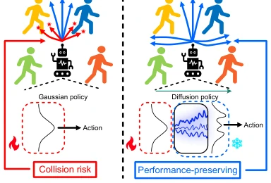
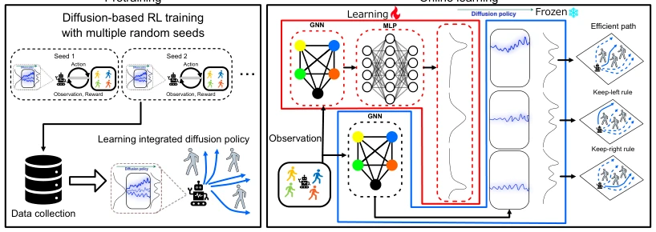
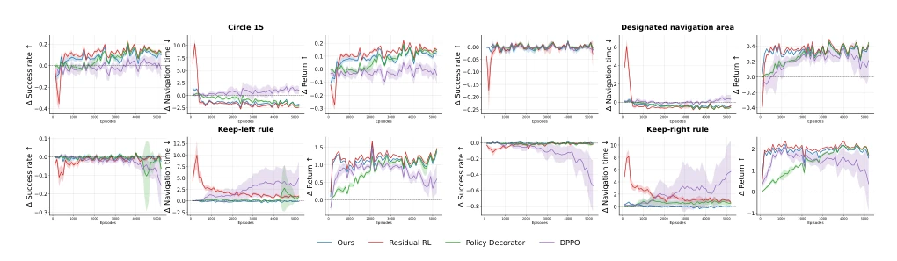
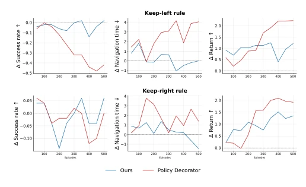
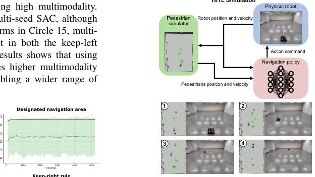
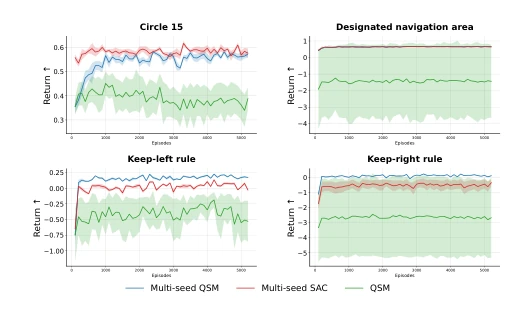
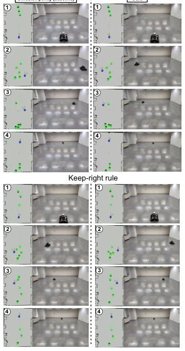
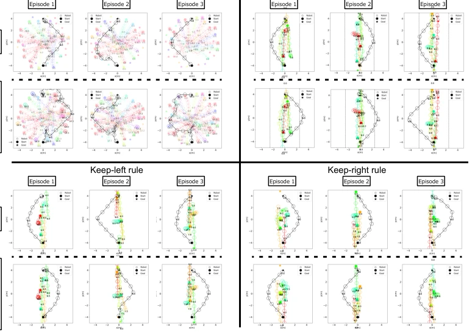

This paper prescribes a remedy for the "fine-tuning anxiety" in social navigation: do not blindly adjust the diffusion policy weights, just modify the noise space. The authors are quite clever, employing DSRL to conduct RL within the latent space of a fixed diffusion policy, aiming to adapt to the social etiquette of new environments (such as keeping left) while fearing that the original life-saving obstacle avoidance capabilities might be ruined. The experimental data is indeed impressive, much more stable than Residual RL and DPPO, without the awkwardness of "colliding more as training progresses". However, the title sounds quite grand, but actual validation only ran through on HITL (physical robot + virtual pedestrians); the true "hell mode" of real humans, real vehicles, and real society has not yet been dared to be tackled, this point requires a footnote of "promising future". Overall, it is a robust online adaptation scheme, suitable for teams that dare not deploy robots into real crowds without safeguards, but it is still distant from true general social navigation.
The core difficulty of social navigation lies in the complexity of human-robot interaction, making hand-crafted models unrealistic, so everyone has turned to Deep Reinforcement Learning (DRL) [1]–[7]. However, existing work is mostly trapped in simulation, where simulators struggle to perfectly replicate real robot dynamics and varying social norms. Once a pre-trained model is deployed into a real environment for fine-tuning, the risk is immense: either failing to learn new rules, or losing the original safety-critical obstacle avoidance capabilities. Although existing research has attempted real-world RL, such as DR-MPC [15] or IRRL [17], they mainly focus on the online learning itself, without emphasizing "performance preservation". Additionally, the unimodal characteristic of Gaussian policies limits the exploration of multi-modal actions, easily generating dangerous actions during the exploration phase. The motivation of this paper is clear: how to ensure the robot does not collide with people and can reach the goal (base performance) while fine-tuning in the deployment environment, while also learning new rules like "keep left" or "walk in designated areas". This is like letting a seasoned driver drive a new car, needing to adapt to new road conditions without breaking the brakes.

Fig. 1: Conceptual illustration of the proposed method. Gaussian policies that explore the action space directly carry the risk of generating actions that collide with pedestrians during the exploration process. In contrast, diffusion steering explores the latent noise space while keeping the diffusion policy fixed, enabling learning to proceed while preserving performance.
方法Method
整体流程分两步走。首先是“筑基”阶段，作者没有直接用单模型，而是用QSM [21] 在不同随机种子下训练多个扩散策略，收集成功数据后通过模仿学习（DDPM）集成为一个多模态的Base Diffusion Policy。这步是为了让基础策略本身就有丰富的行为多样性，避免单点偏差。其次是“微调”阶段，核心是DSRL（Diffusion Steering via RL）。这里有个关键设计：扩散策略的权重被冻结，RL只训练一个生成潜空间噪声的策略（Noise Policy）。为什么这么做？因为直接在动作空间探索容易撞人，而在噪声空间探索相当于在“动作库”里选组合，更安全。算法上用了SAC，还设计了两个价值函数：一个是评估动作的Action-value，另一个是评估噪声的Noise-value，后者通过前者映射，解决了不同噪声可能生成相似动作的问题。最终，机器人通过GNN聚合行人信息，输出噪声，再经扩散模型生成动作。这种“固定骨架、微调神经”的思路，确实比直接改动作分布的Residual RL更稳。
The overall process takes two steps. First is the "Foundation" stage; the authors do not directly use a single model, but use QSM [21] to train multiple diffusion policies under different random seeds, and after collecting success data, integrate them via imitation learning (DDPM) into a multi-modal Base Diffusion Policy. This step is to ensure the base policy itself possesses rich behavioral diversity, avoiding single-point deviation. Second is the "Fine-tuning" stage; the core is DSRL (Diffusion Steering via RL). Here is a key design: the weights of the diffusion policy are frozen, and RL only trains a policy generating latent space noise (Noise Policy). Why do this? Because exploring directly in action space easily leads to collisions, while exploring in noise space is equivalent to selecting combinations in an "action library", which is safer. Algorithmically, SAC is used, and two value functions are designed: one is Action-value evaluating actions, the other is Noise-value evaluating noise, the latter mapped through the former, solving the problem where different noises might generate similar actions. Finally, the robot aggregates pedestrian information via GNN, outputs noise, and then generates actions via the diffusion model. This "fixed skeleton, fine-tune neural parameters" approach is indeed more stable than Residual RL which directly modifies action distribution.

Fig. 2: An overview of the proposed method. The proposed method consists of two stages: pre-training to create a base diffusion policy, and online learning using DSRL. In the pre-training stage, a diffusion policy with a multimodal policy distribution is trained by leveraging diffusion-based RL. In the online learning stage, learning is performed using DSRL while keeping the pre-trained diffusion policy fixed, enabling efficient action selection and adaptation to social conventions.
Experiments are divided into two parts: simulation and HITL. Simulation uses the CrowdNav environment, comparing baselines such as Residual RL, Policy Decorator, and DPPO. Metrics mainly focus on success rate (obstacle avoidance + arrival), navigation time, and Return. The results are very intuitive: Residual RL and DPPO success rates drop sharply in the early training phase, while DSRL remains basically stable or slightly increases, proving "performance preservation" effective. Regarding base policies, diffusion policies integrated via multi-seed QSM perform better than single-seed or Gaussian policy integration, indicating that multi-modality is indeed useful. The HITL component uses a physical robot (Mecanum wheels) plus virtual pedestrians, verifying the feasibility of the method on real hardware. Although no real humans are present, the physical dynamics are real. Ablation experiments show that multi-seed integrated policies are more flexible in maintaining left/right traffic rules than single policies. However, the true real-human environment has not yet been tested, leaving it as an open question.

Fig. 3: Learning curves showing, for each method and each scenario, the differences in success rate, navigation time, and return relative to the base diffusion policy, with the mean across seeds shown as solid lines and the standard deviation shown as shaded regions. A value of 0 on the vertical axis corresponds to the result of the base diffusion policy. Averages are plotted every 100 episodes. The corresponding scenario is indicated at the top of each graph.

Fig. 6: Learning curves showing the differences in success rate, navigation time, and return between each method and the baseline diffusion policy across scenarios. A value of 0 on the vertical axis corresponds to the result of the base diffusion policy. Values are averaged over every 50 episodes, with the scenario indicated at the top of the plot.
其他图片Other Figures

Fig. 5: The upper figure provides an overview of the HITL simulation system, while the lower figure illustrates its operation. In the lower figure, the left side displays the RViz2 visualization, where green cylinders represent pedestrians and the blue cylinder represents the robot. The right side shows the robot operating in the physical environment.

Fig. 4: Learning curves showing, for each scenario, the return trained using DSRL for the three methods used to construct the base diffusion policy, with the mean across seeds shown as solid lines and the standard deviation shown as shaded regions. Values are plotted as averages over every 100 episodes. Scenarios are indicated at the top of each plot.

Fig. 7: Comparison of the behavior of the proposed method and the base diffusion policy in one episode selected from the final 100 episodes, for each scenario.

Fig. 8: Trajectories for three selected episodes from the final 100 episodes of the proposed method and baseline policy in each scenario are shown. Here, the robot’s trajectory is represented in black, while other colors indicate pedestrian trajectories. In scenarios with a designated navigation area, the boundary is shown with a black dotted line.